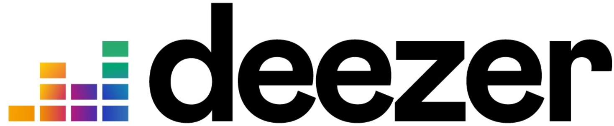
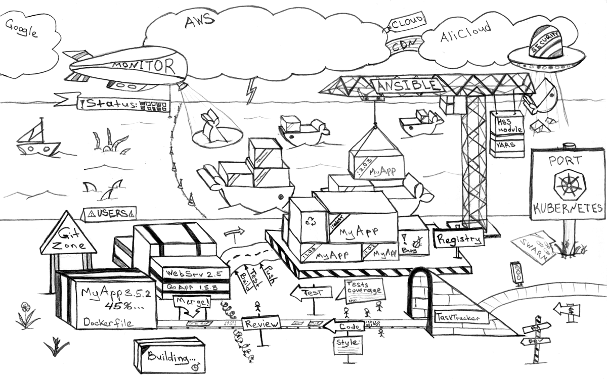
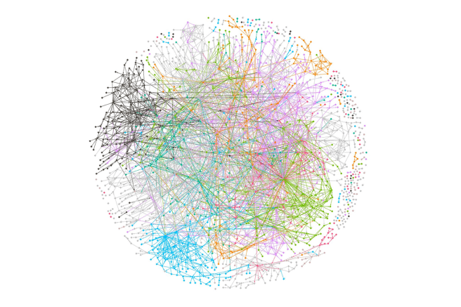

Denis GERMAIN
Senior SRE chez 
Auteur principal sur blog.zwindler.fr*
@zwindler / @zwindler_rflx
#geek #SF #courseAPied
*Les slides de ce talk sont sur le blog
Une Network Engineer SRE pour connecter tout ce binio
Et des Devs pour casser faire scaler les environnements
Et plus encore
GOTO deezerjobs (ou demandez moi, je suis gentil)
 Crdits : Dmitriy Paunin
Technologie de containerisation d'applications
Techniquement : on a rinvent les jail avec une interface de management "simple" et des (trs) gros binaires
jail
Mais on ne sait toujours pas comment grer :
Orchestrateur de containers, inspir par un outil interne de Google
Donn la CNCF (spin-off Linux Foundation)
Open Sourc en 2015
Kubernetes dfinit un certain nombre d'objets pilotables par API, qui ensemble fournissent des mcanismes pour dployer, maintenir et mettre lchelle des applications
Lancer nginx dans Docker Versus dans Kubernetes
Dcrire l'tat souhait de notre application hautement disponible
L'histoire rcente regorge de failles et d'exploits sur des interfaces de management ouvertes sur Internet
phpMyAdmin
tomcat-manager
webmin
...
The hackers had infiltrated Teslas Kubernetes console which was not password protected / Source : redlock.io
Vraiment.
N'exposez pas la console. Si vous ne l'utilisez pas, ne la dployez mme pas.
kubectl
$$
zdnet - Microsoft dcouvre un gang de cryptomining dtournant des clusters Kubernetes
Pas de gestion des (vrais) utilisateurs. Les applications/dmons ont des ServiceAccounts authentifis par :
Ajouter une authentification tierce de type OIDC + RBAC
Depuis la 1.6 (2017), RBAC (Role-based access control) par dfaut
Appliquez le principe de moindre privilge
Ex. alice a le droit de lister les containers dans le namespace default, mais pas de les supprimer ni les crer.
Si un compte utilisateur/application est compromis, les accs de l'attaquant seront limits un primtre donn :
Le principe des moindres privilges est un vrai chantier
Pour auditer le RBAC :
kubectl auth can-i
kubectl who-can
Tous les flux doivent tre chiffrs, en particulier ceux de Kubernetes lui-mme (api-server, etcd, ...)
Point Captain Obvious : Si les flux ont t chiffrs, il sera plus difficile de rcuprer des identifiants
2000 Docker engines are insecurely exposed to the Internet unit42 : Docker API + Graboid
[...] but it was possible to connect from.the Internet 4armed : etcd + Digital Ocean
our coworkers server was also publicly exposing the kubelet ports Handy + kubelet
Par dfaut, Kubernetes autorise tout container se connecter n'importe quel autre #OpenBar
Monzo Bank a mis en place des Network Policies pour la totalit de ses 1500 microservices : 
Mettre en place des Network Policies peut tre complexe...
... mais on peut faire encore plus complexe !
Dlguer beaucoup d'aspects rseau+scu au Service Mesh :
Sysadmins/Devs: "It's secure because it's in a container"
Hackers: @sylvielorxu
Kubernetes utilise (pour l'instant) la table des users ID de l'hte
binaire lanc en tant que root = binaire lanc en root sur l'hte k8s
Kubecon EU 2018: The route to Rootless Containers
Un des services de supervision (Weave Scope) avait t cr avec des privilges et accessible depuis le net
Our deployment was missing the annotation to make the load balancer internal The weave-scope container is running with the --privileged flag Files on the root file system were mounted onto the container Containers are run as theroot user.
weave-scope
--privileged
root
How A Cryptominer Made Its Way in our k8s Clusters
Kubernetes permet l'ajout de politiques de conformits, notamment dans le but d'imposer des rgles pour les Pods
# Required to prevent escalations to root. allowPrivilegeEscalation: false runAsUser: # Require the container to run without root privileges. rule: 'MustRunAsNonRoot'
Dprcies depuis Kubernetes 1.21 A remplacer par OPA (Open Policy Agent)
Vos politiques de conformit sur Kubernetes avec OPA et Gatekeeper
Des CVE sortent sur NodeJS, .Net et autre JVM toutes les semaines
Les images de bases de vos containers sont bourres de failles
Interface affichant les failles dtectes sur chaque image
Rajouter des quality gates ct Intgration Continue pour bloquer les images qui ne rpondent pas aux exigences de scurit
Limiter l'impact d'une compromission :
ping
traceroute
gcc
Il existe aussi des Intrusion Detection System pour Kubernetes
Falco is an open source project for intrusion and abnormality detection for Cloud Native platforms
Cilium: eBPF-based Networking, Observability, and Security
Utilise des programmes BPF ct kernel pour dtecter des comportements anormaux
Cilium Uncovering a Sophisticated Kubernetes Attack in Real-Time
Comme tout logiciel, Kubernetes a des failles !
Aout 2019 : la CNCF a command un audit du code de Kubernetes
Trois autres grosses CVE sont sorties "rcemment"
... en vrai, c'est pas forcment simple
Kubecon EU 2018 - Zalando Continuously Deliver your K8s Infra
Exemple d'attaque via Unauthenticated Kubelet
Source: Kubernetes Security / Duffie Cooley
Microsoft Security Blog
Outil qui permet d'empaqueter une application et ses dpendances. Elle pourra tre excut sur n'importe quel serveur
Pratique si on dploie souvent de "petites" applications, en cycle (trs) courts
L'application devient immuable
blog.zwindler.fr / Should we have containers ?